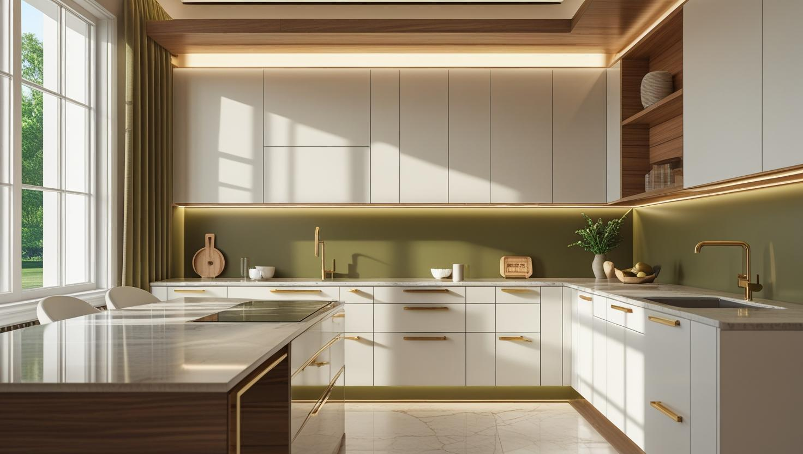
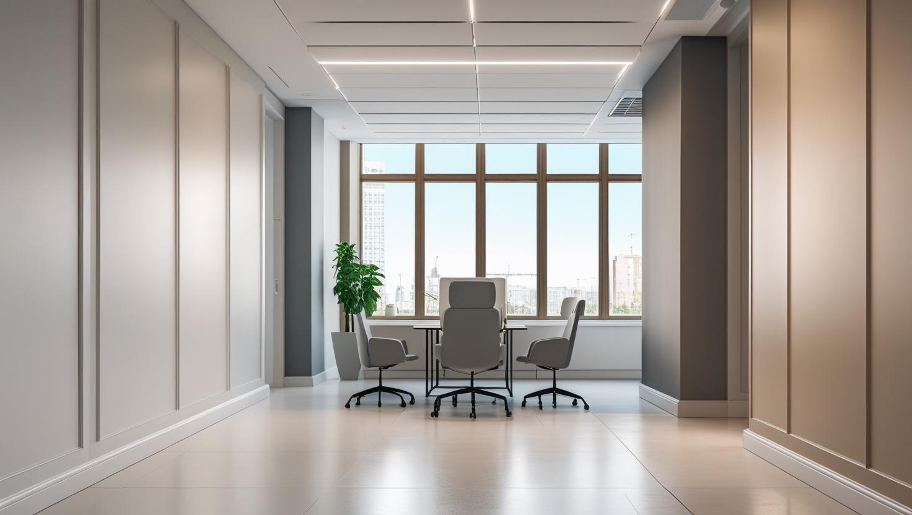

İstanbul Boyacı | Profesyonel Boya Badana Hizmeti
İstanbul Genelinde Ev ve Ofisler İçin 1 Günde Teslim Garantili Boyacı Ustası
İstanbul genelinde hizmet veren profesyonel boyacı ustası ile aynı gün iletişime geçin.


Profesyonel Boya Badana Hizmetlerimiz

İç Cephe Ev & Ofis Boyama
İstanbul'daki ev ve ofisleriniz için uzman boyacı ustası ekibimizle yaşam alanlarınızı yeniliyoruz. Sadece estetik değil, sağlıklı çözümler sunuyoruz.
- Kusursuz Duvar ve Tavan Boyama
- Detaylı Alçı ve Sıva Tamiratı
- Renk Seçimi Danışmanlığı
- Garantili ve Temiz İşçilik

Dış Cephe Boyama & Yalıtım
Binalarınızın değerini artıran ve yıllara meydan okuyan dış cephe boya çözümleri. Hava koşullarına karşı tam koruma sağlıyoruz.
- Isı ve Su Yalıtımlı Boyalar
- Mantolama Üzeri Boya Uygulamaları
- Küf ve Yosun Oluşumunu Önleme
- Uzun Ömürlü ve Kaliteli Malzemeler

Dekoratif & İtalyan Boya
Mekanlarınıza sanatsal bir dokunuş katmak için İtalyan boya, sedef boya ve modern efekt uygulamaları ile fark yaratıyoruz.
- Beton ve Mermer Efektli Duvarlar
- Özel Desen ve Doku Çalışmaları
- Kişiye Özel Tasarım Uygulamaları
- Estetik ve Göz Alıcı Sonuçlar
Referans Çalışmalarımız ve Projelerimiz






Neden İstanbul'da Bizi Tercih Etmelisiniz?
Titiz ve Temiz İşçilik
Evinizi veya ofisinizi kendi mekanımız gibi görüyor, işe başlamadan her yeri koruma altına alıyor ve iş bitiminde tertemiz teslim ediyoruz.
Söz Verilen Zamanda Teslim
Anlaştığımız işi, anlaştığımız günde, beklenmedik bahaneler üretmeden bitiririz. Zamanınızın değerli olduğunu biliyoruz.
Sadece Kaliteli Malzeme
İsteğinize göre Filli Boya, Marshall, Jotun gibi en iyi markalarla çalışarak, yatırımınızın karşılığı olan kalıcı sonuçlar elde ederiz.
Güvenilir ve Şeffaf Usta
Ücretsiz keşiften iş teslimine kadar tüm süreçte şeffaf iletişim kurar, size güven verir ve aklınızda soru işareti bırakmayız. İstanbul'da boyacı seçimi rehberi için tıklayın.
Eşya Koruma Garantisi
Değerli eşyalarınız, mobilyalarınız ve zeminleriniz özel örtülerle titizlikle korunur. Bir damla boya lekesiyle karşılaşmazsınız.
%100 Müşteri Memnuniyeti
Amacımız sadece duvarları boyamak değil, bizi İstanbul'daki çevresine gönül rahatlığıyla tavsiye eden mutlu müşteriler kazanmaktır.
Adım Adım Hayallerinize Giden Yol
Sizin için her detayı düşündük. Size sadece hayalinizdeki renklerin keyfini çıkarmak kalıyor.
Tanışma & Ücretsiz Keşif
Bize ulaştığınızda, sizi dinlemek için oradayız. Evinizi ziyaret edip isteklerinizi anlıyor, size özel renk ve malzeme önerileri sunuyoruz. Elbette tamamen ücretsiz ve samimi bir sohbetle.
Net ve Anlaşılır Teklif
Sürprizlere yer yok. Yapılacak her işi, malzeme detaylarını ve toplam ücreti net bir şekilde size sunuyoruz. Aklınızda tek bir soru işareti bile kalmıyor.
Eşyalarınız Bize Emanet
Boyadan önce en az boya kadar önem verdiğimiz bir adım var: koruma. Değerli eşyalarınızı ve zeminleri titizlikle kaplıyor, evinizi bize emanet ettiğiniz gibi koruyoruz.
Usta Dokunuşlarla Renklendirme
Sıra en keyifli kısımda! Ekibimiz, pürüzsüz hale getirdiğimiz duvarlarınızı hayallerinizdeki renklere kavuşturuyor. Her fırça darbesinde kaliteyi ve özeni hissedeceksiniz.
Mutlu Son & Tertemiz Teslimat
İşimiz bittiğinde, ardımızda bir damla boya lekesi bırakmıyoruz. Son kontrolü birlikte yapıyor ve yüzünüzdeki gülümsemeyle size veda ediyoruz.
İstanbul'da Boya Ustası Arayanlar İçin Kapsamlı Fiyat Rehberi
İstanbul'da güvenilir bir boya badana ustası bulmak, evinizin veya iş yerinizin çehresini değiştirecek en önemli adımdır. Doğru renkler ve profesyonel bir işçilikle mekanlar sadece yenilenmez, aynı zamanda değer kazanır. **İstanbul Boyacılık** olarak, 20 yıllık tecrübemiz ve uzman boyacı ekibimizle bu süreçte yanınızdayız. Sunduğumuz kaliteli ve garantili boya badana hizmeti ile mekanlarınıza estetik ve kalıcı çözümler getiriyoruz. Bu rehberde, İstanbul'da bir boya ustası seçerken nelere dikkat etmeniz gerektiğini ve merak ettiğiniz tüm soruların cevaplarını bulacaksınız.
Detay işçilikte kestirme fırçası ile temiz çizgiler oluşturur, yüzey hazırlığında doğru astarlama yapar ve boya sınırlarında maskeleme bandı kullanarak pürüzsüz geçişler sağlarız.
Boya Ücretleri ve Maliyetler
| Hizmet Türü | Metrekare Fiyatı | Ortalama Süre (100m²) | Garanti |
|---|---|---|---|
| İç Cephe Boyama | 100-200 TL | 2-3 Gün | 3 Yıl |
| Dış Cephe Boyama | 150-250 TL | 3-5 Gün | 5 Yıl |
| Dekoratif Boyama | 250-500 TL | 4-7 Gün | 5 Yıl |
| Ofis Boyama | 120-220 TL | 2-4 Gün | 3 Yıl |
Boya Maliyeti Hesaplama Aracı (Boyacı İşçilik Dahil)
İstanbul'un Güvenilir Boyacı Ustasıyla Tanışın
İstanbul gibi metropol bir şehirde boyacı ustası arayışınız, sadece bir hizmet alımı değil, aynı zamanda yaşam ve çalışma alanlarınıza gösterdiğiniz özenin bir ifadesidir. Profesyonel ekibimizle bu hassasiyetin farkındayız. İstanbul geneli daire boyama hizmetimizden, büyük ölçekli ofis ve iş yeri projelerine kadar her işi, bir zanaatkar titizliği ve profesyonel bir yaklaşımla ele alıyoruz. Amacımız, mekanlarınızı sadece yenilemek değil, onların ruhunu, karakterini ve mülkünüzün değerini yüceltmektir. Yerel detaylar için Kadıköy boyacı ve Üsküdar boyacı sayfalarımızdan ilgili bölgesel çözümleri inceleyebilirsiniz.
Sıkça Sorulan Sorular
İstanbul boya hizmetlerimiz hakkında merak ettikleriniz
İstanbul’da evini ya da iş yerini boyatmak isteyenler için güvenilir bir boyacı ustası bulmak, işin kalitesi açısından oldukça önemlidir. En iyi boyacıları bulmak için referanslı ustalarla çalışmak, müşteri yorumlarını incelemek ve yüz yüze fiyat teklifi almak önerilir. İstanbul Boyacılık olarak her semte hizmet veriyor, profesyonel ekip ve kaliteli malzeme garantisi sunuyoruz. Hemen bizimle iletişime geçerek ücretsiz keşif talebinde bulunabilirsiniz.
İstanbul'da 3+1 (yaklaşık 100-120 m²) bir dairenin komple boyanması, seçilen boya markası (Filli Boya, Marshall, Jotun vb.), duvarların durumu ve işçilik kalitesine göre genellikle 15.000 TL ile 30.000 TL arasında değişmektedir. Net fiyat için ücretsiz keşif hizmetimizden yararlanabilirsiniz.
İstanbul'da 2+1 (yaklaşık 70-90 m²) bir dairenin boyanması genellikle 8.000 TL ile 20.000 TL arasında bir maliyete sahiptir. Fiyatlandırma, tavan, duvar, kapı ve peteklerin boyanıp boyanmayacağına ve ek tamirat işlerine göre değişebilir.
Sizin için süreci en kolay hale getiriyoruz. Kırılabilecek küçük ve özel eşyalarınızı kaldırmanız yeterlidir. Geri kalan büyük mobilyaların (koltuk, dolap vb.) çekilmesi, üzerlerinin koruyucu naylonlarla kaplanması ve yerlerin örtülmesi gibi tüm işlemleri profesyonel ekibimiz titizlikle yapmaktadır.
Eşyalı ve içerisinde yaşam olan standart 3+1 bir dairenin boya badana işlemi, gerekli alçı tamiratları da dahil olmak üzere genellikle 2 gün içerisinde tamamlanır. Eşyasız ve boş daireler daha hızlı, yaklaşık 1-2 günde teslim edilebilir.
En çok önem verdiğimiz konulardan biri temizliktir. İşe başlamadan önce tüm eşyalarınızı ve zeminleri özel örtülerle tamamen izole ederiz. İş bitiminde tüm koruma malzemelerini toplar, yerleri süpürür ve evinizi size tertemiz bir şekilde teslim ederiz. Bir damla boya lekesiyle karşılaşmazsınız.
Evet, bu bizim uzmanlık alanlarımızdan biridir. Önce özel küf önleyici solüsyonlarla yüzeyi temizliyor, gerekirse nem bariyeri veya yalıtım astarı uyguluyor ve ardından küf oluşumunu engelleyen özel boyalar kullanıyoruz.
Müşteri memnuniyeti için sadece en kaliteli ve sertifikalı markalarla çalışıyoruz: Filli Boya, Marshall, Jotun, Dyo gibi sektörün lider markaları. Renk ve boya türü seçimi konusunda size ücretsiz danışmanlık yapıyoruz.
Duvar çok emici ise, yoğun tamirat yapıldıysa veya koyu renkten açık renge geçiliyorsa astar gerekir. Astar, boyanın tutunmasını artırır, renk dengesini iyileştirir ve uzun ömürlü sonuç sağlar.
Dekoratif boya, duvarlara doku ve özel efektler (mermer, beton, kadife vb.) kazandıran sanatsal bir uygulamadır. Genellikle TV ünitesi arkası gibi odak noktası yaratılmak istenen tek bir duvara uygulanır ve mekana benzersiz bir estetik katar.
Evet, yaptığımız tüm işlerin arkasındayız. Bu nedenle, iç cephe boya işlerimizde 3 yıla, dış cephe işlerimizde ise 5 yıla varan işçilik garantisi sunuyoruz.
Ücretsiz keşifte uzman ekibimiz adresinize gelir; duvarları inceler, net metraj ölçümü yapar, renk ve malzeme danışmanlığı sunar ve son olarak size tüm detayları içeren, gizli maliyet barındırmayan net bir fiyat teklifi sunar.
Ücretsiz keşifte metraj ölçümü ve yüzey analizi yapar, malzeme seçeneklerini netleştiririz. Ardından tüm iş kalemlerini ve toplam bedeli içeren yazılı teklif sunar, onayınız olmadan hiçbir ek ücret çıkarmayız.
İyi bir usta, sadece fiyat vermez; size süreç hakkında bilgi verir, malzeme seçenekleri sunar, referans gösterebilir ve işine garanti verir. İletişimi kuvvetli, temizliğe özen gösteren ve anlaşılan zamanda işi bitiren ustalar profesyoneldir.
Deneyimli bir boyacı ustası, yüzeyin durumuna ve işin detaylarına bağlı olarak bir günde ortalama 50 m² ile 100 m² arasında duvar ve tavan boyayabilir. Bu rakam, tamirat işlerinin yoğunluğuna göre değişebilir.
İstanbul'da güvenilir bir boyacı ustası için İstanbul Boyacılık gibi kurumsal ve müşteri yorumları olumlu olan profesyonel firmaları tercih edebilirsiniz. Online platformlar ve çevrenizden alacağınız tavsiyeler de doğru ustayı bulmanıza yardımcı olabilir.
Hizmet Verdiğimiz İstanbul İlçeleri
Anadolu Yakası
Avrupa Yakası
- Arnavutköy Boyacı
- Avcılar Boyacı
- Bağcılar Boyacı
- Bahçelievler Boyacı
- Bakırköy Boyacı
- Başakşehir Boyacı
- Bayrampaşa Boyacı
- Beşiktaş Boyacı
- Beylikdüzü Boyacı
- Beyoğlu Boyacı
- Büyükçekmece Boyacı
- Çatalca Boyacı
- Esenler Boyacı
- Esenyurt Boyacı
- Fatih Boyacı
- Gaziosmanpaşa Boyacı
- Güngören Boyacı
- Kağıthane Boyacı
- Küçükçekmece Boyacı
- Sarıyer Boyacı
- Silivri Boyacı
- Şişli Boyacı
- Zeytinburnu Boyacı
İletişim
İletişim Bilgileri
Telefon: 0507 832 29 12
E-posta: boyaustamistanbul@gmail.com
Demirkapı Cd. No:1 Bayrampaşa/İstanbul
Çalışma Saatleri: Pzt-Cmt 00:00-23:59
Hızlı Teklif Formu
Yıldız (*) ile işaretli alanlar zorunludur. Lütfen iletişim bilgilerinizi eksiksiz doldurun.
Yorumlar
Boya Badana Uygulama Rehberi
Boyacı ustası arayışında sürecin sorunsuz ilerlemesi için doğru planlama büyük önem taşır. İhtiyaçlar netleştiğinde, profesyonel bir ekip ile çalışmak hem zamanı kısaltır hem de uygulama kalitesini artırır. Daire boyama projelerinde tavan, iç cephe ve duvar boyama gibi kalemlerin baştan belirlenmesi, boya badana fiyatları konusunda daha tutarlı ve karşılaştırılabilir teklifler almanızı sağlar.
Kaliteli İşçilik ve Hazırlık Süreci
Kalıcı ve estetik bir sonuç için boya markaları karşılaştırması yapılmalı, boya öncesi hazırlık adımları atlanmamalıdır. Zımpara ve astar uygulamaları, iç mekân boyama işlemlerinde yüzeyin pürüzsüz olmasını sağlayarak boyanın ömrünü uzatır.
Sunduğumuz Hizmet Çözümleri
- Acil Boyacı: Taşınma veya teslim öncesi durumlar için planlı ve hızlı ekiplerle aynı gün hizmet. Kadıköy boyacı ve Üsküdar boyacı ekiplerimizle tüm Anadolu Yakası'na hizmet veriyoruz.
- Garantili Hizmet: Sözleşmeli çalışma modeliyle temiz işçilik ve uygulama güvencesi.
- Ofis Boyama: İş akışını aksatmadan, kurumsal alanlara özel anahtar teslim çözümler.
Ücretsiz keşif desteğimizle, mekânınıza en uygun uygulama yöntemleri ve modern boya teknikleri hakkında detaylı bilgi alabilir, süreci baştan sona kontrollü şekilde planlayabilirsiniz.